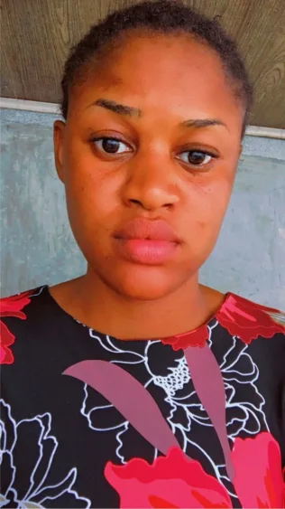

Ogundu Faith | WDD 130
Hello! My name is Ogundu Faith, I'm 28 years old and i'm from Rivers state, Nigeria. I'm a student of BYU Idaho studying web and computer programming. I believe I can be all I want to be. Feel free to always reach out.
Hello! My name is Ogundu Faith, I'm 28 years old and i'm from Rivers state, Nigeria. I'm a student of BYU Idaho studying web and computer programming. I believe I can be all I want to be. Feel free to always reach out.